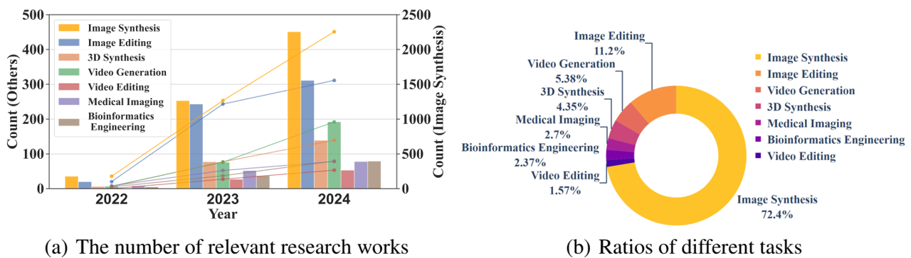

论文阅读一：高效扩散模型：从原理到实践的全面综述
摘要
最近在扩散模型方面取得的显著成功主要来自渐进式设计原则和高效的架构、训练、推理和部署方法。在这项调查中，我们为这些现有的努力提供了一个新的以效率为导向的视角，主要关注架构设计、模型训练、快速推理和可靠部署中的深刻原则和有效实践，以读者友好的方式指导新场景的进一步理论研究、算法迁移和模型应用。论文地址
引言
扩散模型（DM）具有比变分自编码器（VAEs）和生成对抗网络（GANs）更密集的理论基础，先前的大量研究聚焦在采样过程、条件引导、似然最大化和泛化能力，以此提高它们的效率和性能。DM成为LLM的竞争对手，几乎共同成为当今生成型AI社区中最辉煌的两颗钻石。然而，当前的DM仍然面临可扩展性困境，这将在支持大规模深度生成训练和产生类似于LLMs的涌现能力方面发挥关键作用。具有代表性的是，最近Sora的出现将视频模型视为世界模拟器，将生成模型的智能出现能力推向了高潮。不幸的是，Sora仍然是一个闭源系统，智能出现的机制仍然不太清楚。
这项调查的目标是对快速发展的高效DM领域的最新进展进行详尽的组织，以促进生成模型的智能出现，如下图所示，将文献组织在一个由六个主要类别组成的分类体系中，涵盖了高效DM的各个方面，包括原理、高效架构、高效训练和微调、高效采样和推理、部署和应用。
原理 侧重于DM的深厚理论基础，通过梳理动态建模、分数匹配、潜在投影和条件引导等相关理论，解释和揭示其生成有效性的根本原因，促进新理论的发展，指导各种高效的生成实践。
高效架构 探索了DM的主流骨干网络，包括：U-Net、DiT、U-ViT、MamBa等，并分析了它们的设计结构，比较了各自的优缺点，以指导更强大的新型深度可扩展架构的出现。
高效训练和微调 整理了DM的高效训练、微调和偏好优化方法，如低秩适应、一致性训练、对抗训练、适配器训练等，旨在帮助研究人员和开发人员为特定的低资源或个性化训练任务做出适当的选择。
高效采样和推理 调查了扩散模型中最常用的有效采样和推理策略，涵盖两类：无需学习和基于学习的方法。通过比较它们在各种生成任务上的加速性能，将为研究更快的采样方法提供理论依据。
高效部署 总结了在移动设备和网络上部署当前DM的最新解决方案，这将促进DM在各种跨平台、低资源环境中的运行，并促进各种应用程序的诞生。
应用 研究了高效DM在各个领域的实际应用，强调生成性能、效率和计算成本之间的平衡。
高效扩散模型：基本原理
扩散模型被建模为一系列无监督的潜在变量模型，其灵感来自非平衡热力学的考虑，这些模型易于定义，并且可以有效地训练以生成高质量的样本。组织扩散模型的理论背景，并总结以下核心原则。
1 定义与理论初探
离散定义 假设数据分布为，离散DM被定义为正向数据扰动过程和可学习的反向去噪过程，这两个过程都是基于马尔可夫步长实现的，用于渐进式加噪或去噪：
请注意，这两个对称过程以不同的方式进行。前者利用人工噪声添加调度器将逐渐转换为，而后者通常从开始，采用分数匹配模型逐渐估计后验分布，直到预测到。具体如下：
其中便于计算和表达。的训练目标是最小化模型的负对数似然:
上述变分界可以改写为可处理的形式:
连续定义 Score-SDE首次从随机微分方程（SDE）的角度定义了连续时间DM，可以简化为：让表示数据分布，扩散模型首先在上施加扰动核进行正向过程。然后，它们继续利用反向ODE（也被称为概率流(PF)ODE）进行反向去噪，其保留了与正向SDE相同的边际概率密度。连续时间形式的正向和反向扩散过程可以表示为：
其中和分别是漂移和扩散系数项，以及表示标准布朗运动。此外，表示的对数似然的梯度，可以通过分数匹配网络进行估计。
2 基于分数的匹配原则
分数匹配是一种用于估计非标准化统计模型（如基于能量和基于流量的模型）的流行方法，它也非常适合估计上述扩散模型的梯度。给定来自数据分布的样本，我们的任务是学习一个非正规化密度，其中来自参数空间。该模型的配分函数表示为，假设其存在但难以处理。设是由我们的模型确定的归一化密度，我们有：
3 潜在建模原理
潜在空间投影，通过利用预训练的VQ-VAE模型将输入图像压缩到感知高维空间中以获得。VQ-VAE也被几乎所有的当前扩散模型所采用，它由编码器和解码器组成。数学定义是：给定一个输入图像，VQ-VAE首先通过编码器将图像x压缩为一个潜在变量，即和，其中h和w分别表示缩放的高度和宽度（缩放因子f = H/h = W/w =8），d是压缩潜在变量的维数。在经历了方程1或方程5中描述的扩散步骤后，潜在变量被更新，并最终由解码器重建为:
其中LDM（·）表示潜在扩散模型（包括基于Unet或基于Transformer），θ表示LDM的参数，π表示为训练我们的扩散模型而冻结的VQ-VAE的参数。
4 条件引导原则
条件引导视觉生成。文本条件扩散模型的核心是将文本条件c的语义整合到噪声预测模型中，以生成符合文本语义的视觉内容，即。无分类器引导技术最近被广泛应用于文本引导图像生成:
其中w=7.5是用于在稳定扩散中加权无条件制导目标和条件制导目标的默认线性参数，t是时间输入，c是文本条件，表示由零向量初始化的空文本嵌入，θ是模型参数。请注意，在以下变体中，所有这些参数都将单独或联合优化，以进行受控图像编辑。
条件引导视觉编辑。与条件引导扩散模型相比，图像编辑方法通常具有更严格的限制，其目的是在保持原始像素特征的同时进行语义引导编辑。对于ControlNet，参数θ被分为和，用于预先保存和语义引导编辑，其中由零卷积层训练，条件c被分为文本提示和图像特征图。该变体可以形式化为（变体1）。然后，为了实现更准确的编辑，Prompt-to-Prompt引入了一个固定时间的超参数τ，以确定何时将交叉关注参数操纵为编辑后的，其可表示为，其中w可以被视为一个重新加权的超参数（变体2）。之后，Null-Text-Inversion通过DDIM反转过程的枢轴监督优化了零嵌入到时间感知嵌入中，该过程可以简单地表示为（变体3）。后来，为了进一步实现主题绑定和先验保存，DreamBooth引入了与视觉主题相关的罕见令牌标识符“[V]”，并利用了一个额外的特定于类的先验保存项进行训练，即（变体4）。此外，为了实现非网格编辑，Imagic优化了文本嵌入c，并利用插值技术来实现可变引导，该可变引导由线性超参数η控制为（变体5），其中。
主流网络架构
如下图所示，根据潜在扩散模型（LDM），最新的文本条件视觉生成模型由三个主要模块组成：一个变分自动编码器（VAE）被训练并用作潜在压缩器，它将图像或视频从高维像素空间编码到潜在空间。模型在压缩的潜在空间中执行扩散和去噪。一个神经网络，优化用于学习每个去噪步骤所需的概率分布。一个文本编码器，将输入文本编码为文本嵌入，作为控制和指导图像或视频内容生成的条件。
用于潜在空间压缩的VAE
高维RGB像素空间中的扩散和去噪会导致昂贵的训练成本，并影响推理速度。为了使扩散模型易于访问，同时减少其大量的资源消耗，LDM观察到，即使在积极压缩后，图像的大多数比特也有助于感知细节，并保留语义和概念组成。LDM通过训练将输入图像从像素空间压缩到潜在空间的VAE来消除像素级冗余。然后在潜在空间中进行扩散和去噪，这大大降低了DM的训练和推理成本。下图显示了图像/视频压缩的标准VAE的结构，其中包括正常变分自编码器（VAE）、量化VAE，如VQVAE或VQGAN及其变体，其中添加了GAN鉴别器损耗，以实现更高压缩的重建质量。更重要的是，训练后的VAE是一个广义压缩模型，其潜在空间可用于训练多个生成模型并应用于其他下游任务。在LDM之后，后验图像生成方法通过使用VAE的编码器和解码器训练VAE来压缩/解压缩潜在空间中的图像。在扩散模型训练和推理过程中，VAE的参数被冻结。一些扩散模型用于通过直接学习像素分布来生成视频。视频不仅包含空间信息，还包含大量的时间信息，因此视频生成中存在更多的计算挑战。此外，Sora举例说明的扩散视频生成模型使用VAE压缩视频，然后在潜在空间中进行训练和推理。这些视频生成模型通常来自Stable Diffusion的图像2D VAE，因为从头开始训练3D非常具有挑战性。时间压缩很容易通过均匀的帧采样，同时忽略帧之间的运动信息来实现。
下表比较了社区中常用的VAEs的性能参数。一些方法使用混合2D-3D VAEs或全3D VAEs。例如，MAGViT使用具有3D和2D下采样层的3D VQGAN，MAGViT-V2使用具有重叠下采样的全3D卷积编码器。为了在较低的内存和计算成本与稍低的重建质量之间进行权衡，最新的视频生成模型Moive-Gen在其VAE中使用了交错的2D-1D卷积编码器。

去噪神经网络主干
如下图所示，扩散模型中的神经网络在去噪阶段主要用作残差型噪声预测器，可分为以下主流架构：
基于U-Net的主干。DDPM是引入U-Net作为扩散模型骨干的开创性工作，用于预测去噪过程中每一步的概率分布。其中U-Net遵循PixelCNN+，并利用编码器-解码器架构，在提取特征的同时，通过编码过程的每一层的卷积运算对图像的空间像素进行下采样。在解码器阶段，空间分辨率逐渐恢复，而编码器和解码器提取的特征信息通过跳跃连接进行融合。U-Net能够处理不同尺度的图像特征，这有助于逐步去噪过程。具体而言，Song等人通过在基于Sore的扩散模型中对U-net进行进一步更改，提高了无条件图像生成任务的性能。Prafulla等人在扩散模型中改进了U-Net架构，通过增加网络的宽度和深度，增加关注头的数量等，在图像生成任务上取得了比GAN更好的性能。其他基于U-Net架构的模型直接在高维RGB像素空间中执行扩散和去噪，这导致了高昂的训练成本并影响了推理速度。基于LDM，SDXL使用了更多的注意力块和更大的交叉注意力上下文，从而在U-Net中包含了更多的参数。VDM通过引入3D卷积层将LDM扩展到视频生成任务。
基于Transformer的主干。Transformer具有可扩展性和对注意力机制的长期依赖性进行建模的能力，在自然语言处理、计算机视觉和多模态领域具有主导地位。这一趋势在许多自回归图像生成模型中也得到了体现。然而，在U-ViT和DiT被提出之前，用于图像生成任务的高级扩散模型仍然采用卷积U-Net架构。U-ViT引入了U形结构的变压器块作为扩散模型的骨干，该模型将所有输入视为令牌，并利用浅层和深层之间的长跳跃连接。DiT引入了Vision Transformer作为取代U-Net的骨干，并进一步展示了Transformer在图像生成任务中的可扩展性。最近的工作也证明了DiT架构的扩散生成模型在图像和视频生成任务中的优越性能。具体来说，PixArt-α通过加入交叉注意力模块来注入通过T5编码的文本条件，简化了扩散Transformer中计算密集型的类条件分支。Latte通过从输入视频中提取时空标记，并分别引入时间和空间变换块来模拟潜在空间中的视频分布，将DiT架构扩展到视频生成任务。此外，在DiT之后，Latte使用AdaLAN进行时间步长类信息注入。值得注意的是，Sora的出现证明了Transformer架构在生成高质量视频内容方面的巨大可扩展性。最近有许多图像和视频生成模型也验证了变压器在大规模训练下扩散建模的可扩展性。
基于SSM的主干。基于transformer的扩散模型存在注意力机制的二次复杂性，这使得它们在长序列生成任务（如高分辨率图像合成、视频生成等）上消耗了巨大的计算成本。状态空间建模（SSM）的进展表明了在计算效率和模型灵活性之间实现权衡的新方向。最近提出了一些基于SSM的方法，并证明了它们在建模长序列依赖关系时对多个任务和模式的有效性。Mamba结合了SSM架构，并提出了能够实现高效训练和推理的硬件感知算法。DiM引入了Mamba作为高分辨率图像生成的扩散主干。具体来说，DiM通过设计Mamba块交替执行四个扫描方向，避免了补丁之间的单向因果关系。考虑到Mamba扫描方案缺乏空间连续性，ZigMa通过在图像中引入基于连续性的感应偏置，允许Mamba块适用于2D图像。此外，通过对3D序列进行时空分解，将其扩展到视频生成任务。
除了上述类型的主流扩散模型架构外，还有其他一些用于图像和视频生成的扩散模型架构。Diffusion RWKV引入了RWKV架构作为Diffusion模型的骨干。RWKV由输入层、一系列堆叠的残差块和输出层组成。每个残差块由时间混合和信道混合子块组成。RWKV改进了标准RNN架构，在训练过程中与RNN类似地并行计算。它包括对线性注意力机制的增强，并设计了接收权重键值（RWKV）机制。DiG介绍了门控线性注意力转换器（GLA），并提出了扩散GLA模型。DiG在训练速度和GPU内存方面实现了高效率，用于生成高分辨率图像。
文本编码器
文本编码器用于捕获输入文本提示中的复杂语义，这是文本条件视觉生成模型的关键组成部分，直接影响生成的内容。早期的文本到图像方法使用在成对的文本图像上训练的文本编码器，并且它们可以从头开始训练或预先训练（例如CLIP）。CLIP使用对比学习，并经过训练以对齐文本和图像的嵌入表示。这些文本编码器在使用成对的文本图像进行训练后，可以对视觉和文本语义进行编码。在标记器和嵌入之后，输入文本提示作为条件被注入到扩散模型生成骨干中。如下表所示，一些经典的文本到图像扩散模型使用CLIP模型的文本分支进行文本表示。通常，这些文本编码器的参数被冻结，因此可以忽略扩散模型训练期间的计算和内存消耗。
CLIP系列模型通过对齐图像和文本的嵌入空间来关注图像的全局表示，然而，了解详细描述是困难的。大型语言模型在较大的文本语料库上训练，具有更强的文本理解和生成能力。Imagen将CLIP与预训练的大型语言模型（BERT，T5）作为文本编码器进行了比较。此外，他们发现缩放文本编码器的大小可以提高文本到图像生成的质量，使用T5-XXL编码器可以实现更好的图像文本对齐和图像保真度。一些方法将CLIP和T5编码器合并在一起，以提高文本理解能力。一些图像扩散模型侧重于理解多语言提示和生成图像。HunyuanDiT结合了双语CLIP和多语种T5文本编码器，以提高中文理解能力。最近的一些图像和视频生成模型使用大型语言模型（例如，百川、Llama和ChatGLM）来增强对复杂文本的语义理解。下图提供了一个视觉比较，展示了大型语言模型对复杂文本的理解如何影响扩散模型的生成效应。
高效训练和微调
扩散模型的有效训练策略旨在减少训练时间和资源消耗，同时保持性能改进，使扩散模型在广泛的下游任务中更加灵活。在这里，我们主要强调高效训练的两个方面：参数效率和标签效率。参数高效方法侧重于优化可训练模块的架构，以减少高性能所需的参数数量。同时，高效标记方法旨在最大限度地减少所需的训练数据量，这在高质量标记数据集有限或不可用时尤为重要。在本节中，我们简要概述了提高参数效率和标签效率的各种技术和方法，并讨论了它们在扩散模型下游任务中的意义。
参数高效方法
参数高效训练方法旨在通过仅更新少量参数而不是整个模型来使预训练模型适应新任务，从而在提高性能的同时防止过拟合。根据Delta tuning中的定义，给定扩散模型的预训练参数，微调任务旨在在给定的数据集D上获得参数。参数更新定义为。与完全微调的相比，当时，可以实现高效的训练，其中|·|表示参数的数量。如下图所示，参数高效训练技术可分为三种类型：ControlNet、低秩自适应（LoRA）和适配器。这些方法添加和更新了轻量级模块，从而能够有效地适应新任务。在接下来的小节中，我们将分析这些技术在各种下游任务中的应用优势。
ControlNets
尽管文本到图像的能力令人印象深刻，但扩散模型在空间构图控制方面经常遇到困难，特别是在深度到图像和位置到图像等任务中。为了解决这些局限性，ControlNet将视觉特征引入预训练UNet的多分辨率层，从而实现了更可控的生成。这一进步推动了进一步的研究，从而产生了ControlNet的几个高效变体。如下图所示，这些改进主要集中在两个方面：在保持或提高性能的同时减少ControlNet中的参数数量，以及在不增加参数数量的情况下增强精细训练控制。
一个分支更倾向于减少ControlNet的参数数量。ControlNet XS发现，通过控制块和生成网络之间的高频和大带宽通信，控制模块需要更少的参数来实现更好的结果，从而加速了推理和训练。ControlNeXt引入了一个轻量级的卷积模块来提取控制特征，用交叉归一化代替零卷积，使参数分布与主去噪分支的参数分布对齐，实现更快、更稳定的训练收敛。
另一项工作增强了ControlNet对生成输出的可控性，同时保持了相同的参数计数，ControlNet++采用了一种预训练的判别奖励模型，有效地弥合了条件和生成图像之间的差距，当控制信号反映在生成的图像中时，提高输出的质量和像素级相关性。
适配器
与通过微调重复编码器实现额外空间控制的ControlNet相比，基于适配器的方法拥有更灵活和轻量级的架构，如下图所示，并减少了对大量数据和计算资源的需求，如下表所示。作为允许模型执行各种下游任务的关键部分，适配器建立了条件输入与其相应图像之间的内在联系，使其通常用于可控生成和域自适应。
可控生成适配器有效地将不同的条件映射到扩散模型的条件空间内有意义的区域。对于图像生成，T2I-Adapter捕获条件特征，并将控制特征映射到T2I模型的内部知识，实现图像生成的视觉控制。StableSketching将语义信息从抽象草图转换为文本条件嵌入，并进一步将控制特征约束到嵌入空间中像素完美和文本有意义的区域。SUR-Adapter有效地将简单的提示功能导航到条件空间内信息更密集的区域，从而能够从简单的提示生成高度详细的图像。IP-Adapter将图像特征映射到解耦的条件空间中，使模型能够生成与输入图像相似的图像。在视频合成领域，I2V-Adapter对齐视频每一帧具有图像条件的语义信息，增强了帧间的整体连贯性。FaceChain-ImagineID引入了一个文本反转适配器，将语音文本嵌入转换为令牌嵌入。同时，空间条件适配器将面部网格、身份特征和屏蔽的相邻帧特征映射到条件空间中，在整个视频中保持视听一致性和空间连贯性。总之，适配器在将各种条件注入扩散模型中起着至关重要的作用，显著增强了图像和视频中生成内容的控制和质量。
域自适应中的域自适应适配器用于对齐特征表示，实现特定任务的调整，并促进知识从源域到目标域的高效和有效转移。X-Adapter建立了基础扩散模型的空间特征与升级后的扩散模型空间特征之间的映射关系。Ctrl-Adapter将预训练图像ControlNet的功能集成到目标视频扩散模型的框架中，促进视频生成中的多条件控制。总体而言，通过在不同特征空间之间建立映射，适配器增强了跨不同应用程序的扩散模型的灵活性。
低秩适应
基于最近的观测，即过参数化模型在低维子空间中运行，LoRA使用低秩矩阵学习参数偏移，并假设微调期间的权重更新可以表示为两个较小矩阵和的低秩分解，使得。微调后的权重矩阵变为，其中是原始预训练权重。通过将A和B限制为具有低秩r，其中，LoRA减少了微调期间可训练参数的数量和计算开销。LoRA允许在训练后将学习到的权重更新合并回原始模型，而不是冻结扩散模型并插入新的可训练模块来防止灾难性遗忘，从而避免了额外的推理时间。因此，如下表所示，它已被广泛应用于各种下游任务。

模块自适应受益于低秩特性，可以直接组合在不同数据集或下游任务上微调的多个LoRA参数，以产生合成能力，如上图所示。LCM-LoRA可以生成特定风格的图像，同时通过线性组合风格相关的LoRA参数和加速度LoRA参数，以最小的步骤支持快速推理。AnimateDiff训练单个LoRA专注于不同的运动模式。在推理过程中，这些专门的LoRA可以协同组合，从而产生多样化和复杂的运动效果。LoRA-Composer将多个特定概念的LoRA集成到图像生成过程中，确保每个概念在位置、大小和独特特征方面都得到准确渲染。这些方法使多个LoRA能够在图像的不同区域无缝生成不同的概念，或在图像生成过程中组合不同的特征，充分利用LoRA的可组合性。
概念插值LoRA通过低秩分解在紧凑和结构化的参数空间内近似更新方向。如上图所示，当对不同概念的LoRA参数进行线性插值时，得到的中间参数平滑地融合了原始参数集的特征。Concept Sliders随后通过缩放训练损失中的引导系数和LoRA的超参数，沿特定参数方向修改概念。DiffMorpher发现LoRA具有封装图像语义身份的能力，并通过对适应不同概念的LoRA参数进行线性插值来实现图像变形。总的来说，这些进步表明，LoRA在图像生成和编辑领域提供了极大的灵活性和控制力，使创作者能够在不同概念之间实现更平滑的过渡。
标签高效方法
数据的稀缺性会对扩散模型的生成质量产生负面影响，导致开发了两种关键策略，以最小的标签有效地适应下游任务。一种策略是偏好优化，它训练注释模型（如奖励模型）来替换人类注释，并使用强化学习来持续监督扩散模型的训练，以满足人类偏好。另一种是个性化训练，它优化了学习过程，从小数据集中提取最突出的特征，同时保留了扩散模型的生成能力。
偏好优化
扩散模型主要利用方程2中表示的对数似然的变分下限来近似目标数据分布。虽然训练损失的减少表明模型正在学习某些模式，但这并不一定意味着生成的图像符合人类的审美标准。因此，上图所示的偏好训练框架已成为使模型与人类期望相一致的关键方法。当前图像生成任务中的偏好优化过程通常分为两个步骤。首先，人类的审美偏好被形式化为奖励模型，这降低了在后续阶段标记数据所需的成本和时间。其次，采用对优选输出的直接微调或从人类反馈（RLHF）的强化学习来优化扩散模型与奖励模型。下图展示了每个类别的范式。这些方法避免了在标记有偏好标签的大型数据集上进行直接监督训练所带来的复杂计算负担，使偏好优化成为一种有效的方法。
奖励模型。奖励模型有效地编码人类偏好至关重要，因为这直接影响了扩散模型正确学习和反映个体美学的能力。人类偏好建模的一般思想是最大化具有提示条件T的偏好图像的奖励得分大于偏好数据集中任何样本的其他输出的差异，公式如下：
其中σ表示激活函数，R表示奖励模型。HPS使用包括文本提示和多个图像（一个首选，另一个非首选）的训练数据对CLIP模型进行微调，使模型能够获得人类偏好得分。AHF使用二进制反馈数据集创建文本图像组来训练CLIP模型，应用均方误差（MSE）损失来提高准确性，并应用交叉熵损失来提高对未知数据的泛化能力。ImageReward采用了一种评分系统，在该系统中，更高的排名会产生更高的分数来训练BLIP模型，利用具有评级和排名的文本图像数据集，可以更精细地区分图像质量。Pick-a-Pic是一个大型数据集，其中每个实例都包括一个提示、两个生成的图像和一个指示偏好或联系的标签。它被用来微调Pick Score，一种基于CLIP-H的奖励模型，目的是最小化偏好标签和两幅图像的softmax归一化分数之间的KL差异。
直接微调通过利用监督学习的奖励模型，取得了显著的效果。RAFT在每次迭代中都使用奖励模型来过滤扩散模型生成的K个样本，选择K个样本中的最佳样本来微调模型，从而避免在用没有偏好标签的数据集进行微调时出现过拟合问题。AHF将负奖励加权对数似然引入偏好优化的损失函数中，以改善模型的图像-文本对齐。ImageReward，在扩散模型的细化阶段，利用ReFL损失和正则化以及预训练损失来防止快速过拟合并稳定微调。HPS建议在微调过程中在提示中加入一个特殊的标识符，以区分首选图像。在推理过程中，这些特殊的标识符作为无分类器引导的负面提示，有效地防止了非首选图像的生成。
基于人类反馈的强化学习（RLHF）使用策略梯度来优化人类偏好的策略，旨在最大限度地提高生成图像的奖励模型得分。DDPO将扩散模型的去噪过程重新定义为多步马尔可夫决策过程，并采用重要性抽样技术对其进行优化。该算法是优化任何下游目标的通用框架，涵盖了压缩性、美学质量和文本对齐等方面。DPOK介绍了对DPPO的两个关键改进。首先，它将KL正则化引入损失函数，有效地抑制了模型过度拟合奖励的倾向。其次，通过额外训练一个值函数，它不仅显著降低了梯度估计的方差，而且进一步提高了最终奖励的性能。D3PO克服了DPO在扩散模型中的应用障碍，而不需要预先训练的奖励模型。它通过在线学习进行训练，利用专家对同一文本生成的两幅图像的实时偏好注释。Diffusion DPO直接优化了在单步去噪过程中更符合人类偏好的策略，有效地解决了之前方法中由于需要多步反向去噪而导致的训练时间延长的问题。
个性化训练
基于扩散模型的个性化生成的主要挑战在于数据稀缺，因为高质量的训练数据往往难以获得。为了解决这个问题，个性化训练方法定制学习过程，通过专注于相关和个性化的信息以实现高性能，而不是在广泛的数据集中进行泛化，从而减少了对大量个人数据的需求。在本节中，我们介绍了两种主流的个性化合成方法，并讨论了它们对标签高效方法的贡献。
基于微调的个性化方法侧重于微调预训练的扩散模型，以学习捕获参考对象身份信息的占位符令牌。例如，DreamBooth进行了全面的微调，Textual Inversion调整了伪词的嵌入，Custom-Diffusion优化了交叉注意力层内的键值映射矩阵。此外，LoRA引入了最少数量的可训练参数，并在几个定制的数据集上单独训练，从而促进了LoRA在定制中的广泛应用。最近的努力侧重于通过组合来自不同概念的LoRA权重来实现多概念定制，旨在改善身份保护、处理遮挡并增强前景-背景和谐。
然而，基于微调的方法通常需要数千步的训练来定制概念，其中大多数只依赖于占位符标记嵌入，这被证明不足以有效地将特定概念与其背景布局解耦。为了解决这个问题，基于编码的方法利用额外的图像编码器来注入参考图像细节以生成对象。ELITE和DreamTuner采用了一种策略，从粗到细逐步提取目标特征的视觉信息，从而能够生成更精确和可控的主题驱动图像。同时，BLIP扩散使用多模态编码器（即Q-former）过滤掉背景信息，重点学习预期概念的复杂细节。
高效采样和推理
典型的扩散模型通常需要多次迭代来进行去噪，这阻碍了它们的实际应用。因此，研究人员致力于高效的采样方法，这些方法可以减少推理阶段的迭代次数，同时保持模型生成高质量图像的能力。我们总结了四种类型的方法，并在下面对其进行了说明，以便进行有效的采样和推理。
免训练方法
从SDE和PF-ODE的角度来看，DM可以被定义为一个连续的时间过程。许多著作通过求解离散微分方程来加速采样过程。
SDE求解器是一种用于近似随机微分方程（SDE）解的数值方法。它将连续时间SDE离散化为多个时间步长，实现了高效的从噪声到数据的采样。SDE是生成建模中正向和反向过程的基础。Song等人通过方程式5中的SDE将之前的生成模型统一到一个共同的数学框架中。具体而言，DDPM和SMLD中的正向和反向过程是以下SDE的离散化：
通过精心设计SDE及其离散化方案，SDE求解器寻求平衡步数和近似误差，从而提高扩散模型中输出的效率和质量。
噪声条件分数网络（NCSN）通过朗之万动力学生成新的数据点，使用分数匹配来估计数据分布的梯度。当数据位于低维流形上时，NCSN发现了三个问题：（1）在低数据密度区域，得分函数未定义；（2） 由于训练数据的稀疏性，低密度区域的分数估计是不准确的；（3）在朗之万动力学中，很难有效地混合不同的分布模式。为了解决这些问题，NCSN引入了多级噪声来扰动数据，并采用了退火朗之万动力学（ALD），其中采样从与最高噪声水平对应的分数开始，噪声逐渐降低，直到收敛到原始数据分布。在此基础上，Joliceur-Martineau等人讨论了ALD中噪声缩放的不一致性，并提出了一致退火采样（CAS），这是一种基于分数的MCMC方法，可确保噪声水平遵循预定义的时间表，为ALD提供更稳定的替代方案。
同样基于朗之万动力学，Dockhorn等人引入了临界阻尼朗之万扩散（CLD）。如SCORE-BASED GENERATIVE MODELING THROUGH STOCHASTIC DIFFERENTIAL EQUATIONS所证明的，神经网络学习的得分函数是由正向过程唯一确定的，因此CLD认为，更平滑的正向过程可以导致更快、更高效的样本生成。受统计力学的启发，CLD引入了一种新的SDE，通过引入速度变量，实现了联合数据速度空间中的扩散。在CLD中，噪声仅注入，从而避免了欠阻尼系统的振荡和过阻尼系统的缓慢动力学。此外，CLD只需要在给定数据的情况下学习速度分布的梯度，这可以说比直接学习扩散数据的分数函数更简单。该方法将哈密顿动力学与Ornstein-Uhlenbeck过程相结合，有效地探索状态空间并确保收敛，从而实现了更高效的采样和高质量的数据生成。
SCORE-BASED GENERATIVE MODELING THROUGH STOCHASTIC DIFFERENTIAL EQUATIONS中提出的预测校正方法通过交替使用数值SDE求解器（”预测器“）和基于分数的马尔可夫链蒙特卡洛（“校正器”）来求解逆时间SDE。在每个时间步长，预测器，如Euler-Maruyama和随机龙格-库塔方法，近似逆时间SDE，提供下一个时间步长t的样本的估计。然后，基于分数的校正器细化的边际分布。预测器实现快速收敛，校正器确保样本多样性和质量。所得样本与逆时间SDE的解保持相同的时间边际，这使得它们在实际生成过程中与目标分布紧密对齐。EDM将二阶确定性常微分方程积分器与朗之万式”搅动“扰动相结合，该扰动交替添加和去除噪声。这种方法改进了SCORE-BASED GENERATIVE MODELING THROUGH STOCHASTIC DIFFERENTIAL EQUATIONS中的校正器，实现了当时最先进的生成质量。
数值SDE求解器的另一个问题是，它们需要大量的分数网络评估。Jolicoeur Martineau等人设计了一种具有自适应步长的SDE求解器，以加速生成过程。步长是通过比较低阶求解器和高阶求解器的输出来确定的。在生成过程的每一步，求解器都会从之前的样本生成低阶样本和高阶样本。然后通过以下方式评估这两个样本之间的误差：
其中，和是绝对公差和相对公差。如果和相似，则被接受，步长将增加。
在更具体的情况下，CCDF通过利用反向扩散路径的收缩特性，专注于在条件图像生成任务中进行高效采样。它提出生成过程不需要从纯高斯噪声开始，但可以通过从更接近目标的初始化开始来显著减少采样步骤。输入图像首先被噪声扰动到（其中，并且这个噪声添加过程几乎是"自由的"），然后从开始反向去噪以生成条件图像。因此，生成目标图像所需的步骤比T少得多。在超分辨率（SR）、修复和MRI重建任务中，该方法分别仅需10、20和20个反向扩散步骤即可获得出色的结果。
PF-ODE求解器是加速采样过程最常用的策略之一。与SDE求解器不同，PF-ODE求解器的采样过程是确定性的，因此适合作为知识蒸馏方法中的教师模型。
去噪扩散隐式模型（DDIM）是一种显著更快的扩散采样调度器，它通过非马尔可夫扩散过程支持更大的去噪步骤。特别地，DDIM是ODE的一种特殊表述，其迭代可以重写为：
重新参数化后，方程可以转换为ODE的逆方程。受观察到当训练数据集包含一个样本时，DDIM可以精确求解相应的SDE/ODE的启发，Zhang等人将DDIM扩展到一般DM，即gDDIM。刘等人发现了DDIM的两个局限性。首先，去噪模型和ODE仅在有限的区域内定义良好。然而，具有较大步长的采样过程可能会生成远离明确区域的样本，从而导致新的误差。其次，在许多高阶数值方法中，当指数t→0时，ODE方程趋于无穷大。这种现象会导致细粒度去噪步骤的额外误差。为了解决这些问题，PNDM解决了某些流形上的常微分方程，该流形由梯度和传递部分组成。前者在每一步中找到梯度，后者在下一步生成结果。PNDM使采样轨迹与预训练区域更加一致，从而通过跳过步骤生成更高质量的图像。此外，DPM求解器和DEIS通过半线性结构计算扩散ODE的精确解，因此求解器支持更大的步长，误差更小。具体来说，DPM求解器发现扩散ODE可以分为两部分，即线性（漂移系数）和非线性（扩散系数）函数。之前的方法对这两部分进行了统一处理，这导致了离散化误差，特别是在线性部分。实际上，该部分可以进行解析计算。对于非线性部分，DPM求解器通过引入对数信噪比简化了公式，对数信噪比是t的严格递减函数。接下来，利用泰勒展开来近似非线性部分。此外，DEIS利用高阶多项式外推来减小近似误差，从而实现了更好的采样质量。此外，为了提高加速采样生成样本的质量，UniPC利用当前时间步长t的输出来校正预测样本。NonUniform通过探索时间步长的离散化方案来加速扩散采样，在数值常微分方程求解器中，不同步长的阶数可能不同。
基于检索的方法从预先计算的知识库中检索轨迹，以加速采样过程。受到一个关键常识的启发，即之前的采样步骤决定了图像的布局，接下来的步骤决定了细节。ReDi首先提出了一种基于检索的无学习加速策略。具体来说，生成前几个步骤的样本，这些样本在检索过程中用作查询。依次选择与初始化查询相似度最高的前H键。接下来，线性组合值被用作采样过程的其余步骤。
基于训练的方法
知识蒸馏是基于学习的方法中最常见的采样策略之一，它将知识从确定性ODE（教师）模型提取到加速采样（学生）模型。根据学习目标，这些采样策略可分为三组，即基于分布、基于轨迹和基于GAN的提取。
基于分布的蒸馏策略通过最小化图像或潜在分布来加速学生模型的采样步骤。Luhman等人首先提出了通过知识蒸馏来减少迭代去噪步骤的去噪学生方法。具体而言，具有预训练扩散模型的100步DDIM调度器被用作教师模型Mt，该模型从随机中获得确定性。同时，学生模型使用一步去噪设置来加速采样过程。接下来，为了生成高质量的图像，将学生模型的预测分布与的迭代去噪对齐。的学习目标形式化为：
D是测量分布之间距离的函数，由KL散度实现。为了继承学习到的知识，使用的原始架构和权重进行初始化。与SOTA单步模型（如NVAE、BigGAN）相比，Denoising Student在标准数据集上具有更好的生成能力。随后，考虑到全采样次数造成的昂贵时间成本，提出了渐进蒸馏来迭代加速采样过程。在每次迭代过程中，训练学生模型以预测2个DDIM采样步骤后的噪声，并在下一次迭代中将优化的学生模型用作教师模型。因此，采样数以指数速度减少。此外，Meng等人设计了一种两阶段训练方法，将蒸馏策略应用于无分类器模型。在第一阶段，在之后，教师模型的去噪特征通过来计算。那么，学生模型的学习目标是：
其中，\ω(λ_t)是预先指定的加权函数。在提取学生模型以适应无分类器模型后，第二阶段利用逐步蒸馏策略来加速采样步骤。除了上述方法外，一致性模型（CMs）是高效推理和采样的里程碑，它提出了一种显著的一致性正则化，即,
其中表示第n步的加权，测量两个分布的距离，这可以通过、和LPIPS函数来实现。给定步中的分布x，是通过运行基于分数的去噪模型的一个离散化步骤获得的。表示训练好的去噪网络，网络的参数以指数移动平均（EMA）方式更新。总体而言，CM假设PF-ODE轨迹中任何时间步的分布都可以直接映射到的分布。随后，LCM利用增强一致性函数将扩散器与输入文本条件对齐，并进一步设计了跳过步骤技术来加速去噪模型的收敛。受先前分布匹配方法的启发，DMD对提取的模型进行了微调，以学习预训练模型的虚假分布，这使得生成的学生模型图像与原始教师模型无法区分。
基于轨迹的蒸馏策略通过改进求解PF-ODE的轨迹来加速采样过程。Rectified Flow提出将轨迹从非线性路径修正为直线路径，其形式定义为:
根据该方程，可以观察到是和的线性插值，它模拟了样本之间的最短路径。为了在两个分布和的样本之间建立一一对应的关系，他们设计了回流方法，该方法首先使用随机选择的和训练采样模型。然后，利用第一阶段模型为训练第二阶段模型提供精确的对应关系。随后，InstaFlow被提出用于获取文本条件校正流模型。为了进一步加速采样过程，PeRFlow通过创建K次窗口来训练分段线性流，并遵循回流操作来矫直每个轨迹。同样，DSNO提出了一种并行解码方法，该方法由傅里叶神经算子（FNO）完成。除了使用基于轨迹的梯度下降算法进行蒸馏的策略外，SFT-PG还将强化学习引入到高效采样中。为此，利用策略梯度来代替梯度下降，并最小化积分概率度量（IPM），以在几步内实现更好的生成质量。
基于对抗的蒸馏结合了GAN和扩散模型的优点。扩散模型具有强大的生成能力，能够生成高质量的图像和视频。然而，这些模型存在迭代采样过程，阻碍了它们在现实世界场景中的应用。相反，GAN模型能够以单步公式生成图像，但往往达不到质量，特别是伪影。受这些观察结果的启发，ADD引入了一个鉴别器模型来优化加速采样模型。对抗性损失定义如下：
其中是鉴别器，R1是R1梯度惩罚。同时，为了保持高质量的生成能力，使用预训练的扩散模型作为教师模型。虽然ADD实现了快速采样模型，但由于鉴别器的存在，其去噪过程仅限于像素级（RGB空间）。具体来说，LDD利用DINOv2作为鉴别器的骨干，它不能在潜在空间中进行预测。此外，生成的图像固定为518×518像素。为了解决这些问题，LADD将教师和鉴别器以及具有潜在特征的输入鉴别器统一起来。因此，LADD能够以较小的存储成本生成高分辨率图像。
GAN目标方法利用多峰条件分布代替扩散模型中的严格高斯分布，称为去噪扩散GAN。DDGAN首次提出以GAN为目标训练扩散模型，继承了GAN的快速采样强度。最关键的观察结果是，只有小的步骤才能实现正则高斯分布，而较大的步骤会导致多峰（峰值）分布。因此，为了加速采样过程，利用多峰条件分布代替单峰高斯分布。请注意，基于对抗的蒸馏方法区分生成的样本和真实图像，而去噪扩散GAN模型使用去噪的潜在样本作为“真实”样本。然而，由于GAN的不可扩展性，DDGAN不能应用于大规模数据集。为此，SIDDM添加了一个损失项来显式匹配条件分布。随后，提出了UFOGen来实现一步采样。Xu等人认为DDGAN和SIDDM的失败主要是由于去噪过程中的后验预测造成的。这样，去噪扩散GAN能够直接匹配x0的分布。
优化策略包含通过在训练和推理过程中引入先验信息来设计加速策略的方法。Watson等人介绍了一种动态规划算法来寻找最优离散时间表，该算法可以应用于任何预训练的DDPM。该方法基于证据下界（ELBO）的可分解性，即总ELBO是单个KL项的总和。然后，他们维护两个矩阵，以找到具有最小ELBO的K步采样路径。C[k,t]表示具有k个步骤的迭代t中的最小ELBO，D[k,t]记录当前步骤的最优路径，动态规划的状态转移方程可以形式化地定义为：
其中L(t,s)是从t到s的分解ELBO。然而，Learning to efficiently sample from diffusion probabilistic models中使用的度量与生成图像的质量不匹配，例如FID分数。为了解决这个问题，GGDM利用核初始距离（KID）作为感知损失来获得高保真图像。
截断扩散方法通过在训练和推理过程中引入早期停止来加速采样过程。去噪过程从非高斯分布开始，然后我们可以只执行几个去噪步骤来生成高质量的图像。具体而言，非高斯分布是从现有的生成模型（如GAN和VAE中获得的，这些模型能够近似数据的分布，而无需昂贵的迭代过程
高效部署和使用
前面的部分从研究的角度探讨了各种有效的扩散模型技术，重点是模型架构、训练和微调、采样和推理优化。本节将重点转移到扩散模型的实际部署和应用上。我们将部署和使用场景分为两大类：“高效部署即工具”和“即服务”，如下图所示。前者针对的是已经熟悉使用扩散模型生成图像的基本过程的用户，而后者需要更大的企业级支持，为更广泛的受众提供打包良好的“一键式”图像生成服务。
高效部署工具
在实际应用中，有效部署扩散模型作为工具对研究人员、开发人员和其他AIGC从业者至关重要。这些用户需要高度的灵活性和对生成过程的控制，以在各种场景中调整和优化模型配置。这种类型的部署提供了一个深度实验和定制的环境，充分利用了扩散模型的潜力。它特别适用于需要测试多个模型配置、调整噪声参数、优化性能或集成自定义组件的任务。因此，基于工具的部署通常强调模块化设计、可扩展性、对不同需求的适应性和高水平的控制。
在实施过程中，这些工具必须在易用性和技术深度之间取得平衡。专业用户需要一个既直观又允许深入调整模型参数的界面。实现这种平衡带来了重大的设计挑战，需要工具既能满足专家需求，又不会让用户不堪重负。
以ComfyUI为例，它采用了“基于节点的工作流界面”，允许用户直观地创建和修改复杂的图像生成过程。通过连接不同的节点，用户可以构建模型的每一步，并灵活调整每个模块的参数和超参数。这种模块化设计特别适合那些寻求改进和定制生成过程的用户，尤其是那些能够跟踪从输入到输出的工作流每个阶段的研究人员和开发人员。ComfyUI的基于节点的架构极大地促进了自定义模型和新算法的集成。用户可以轻松地引入新的节点、算法或功能模块进行实验。这对开发人员尤其有益，因为他们可以灵活地交换组件，而无需对整个系统进行彻底检查。另一方面，研究人员可以快速方便地比较调整前后不同模型组件的性能。然而，ComfyUI的灵活性也使其学习曲线更加陡峭，使其更适合对整体扩散模型过程有更深入了解的用户。
相比之下，稳定扩散WebUI（通常称为Automatic1111或WebUI）提供了一个简单的表单式界面。用户可以通过输入提示、步数、CFG比例和图像分辨率等参数来快速生成图像。这种设计特别适合那些想要快速直接的图像生成过程的用户，尤其是初学者。即使隐藏了详细的图像生成工作流程，WebUI仍然提供高级功能和自定义选项，以满足更有经验的用户的需求。通过其插件系统，用户可以实现各种功能，如“修复”和个性化训练工具，如文本反转和ControlNet。虽然它缺乏基于节点的ComfyUI的灵活性，但易于使用的插件使其成为希望在不大量修改模型的情况下扩展功能的用户的理想选择。utomatic1111的WebUI更加用户友好和易于访问，其流线型的基于表单的界面允许用户快速输入参数和生成图像，使其适合那些寻求快速结果的人。对于没有强大技术背景的用户来说，它提供了一种真正的“即插即用”体验。
这些工具为用户提供了对生成过程的广泛控制，从调整扩散步骤的数量到集成为特定领域量身定制的自定义插件或模型。它们不仅满足了参与研发的高级用户的需求，还满足了在生产环境中部署的实际要求。当部署在云环境中时，这些工具通常提供可扩展的基础设施，以适应大规模的工作流程。例如，ComfyUI可以与Amazon EKS无缝集成，实现GPU实例的动态扩展，以满足云中大规模并行推理的需求。此外，活跃的用户社区为这些工具贡献了大量资源，包括全面的API和文档，鼓励开发人员创建和共享自定义插件。这个开放的生态系统不仅丰富了工具的功能，还为各种应用开辟了新的可能性，从艺术创作到科学研究和工业设计。
高效部署即服务
高效部署即服务旨在扩大用户群，通常既不需要先进的技术专长，也不需要本地高端计算资源。服务提供商打包了全面的工具，将扩散模型的复杂处理简化为“一键式”用户体验。他们的工作重点是优化移动和云平台上真实部署场景的推理过程和用户交互。目标是提供更快、更稳定的推理服务，满足日常用户的需求，同时解决成本控制和隐私问题。
在Speed Is All You Need中，谷歌优化了GPU内存I/O，通过两个关键改进显著降低了移动设备上的推理延迟：增强的注意力模块和Winograd卷积。通过使用部分融合的Softmax来减少大型中间矩阵的内存访问，以及FlashAttention来降低内存带宽压力，注意力机制的效率大大提高。此外，Winograd卷积加速了3×3卷积层，在计算效率和内存使用之间取得了平衡。测试表明，在三星S23 Ultra和iPhone 14 Pro Max上，生成512像素分辨率图像的延迟分别降低了52.2%和32.9%，推理时间在20个步骤中降至12秒以下，内存使用上限为2093 MB。
尽管有这些改进，交互式移动应用程序的延迟仍然很高。SnapFusion取得了突破，将移动设备上文本到图像生成的推理时间缩短到2秒以下。为了实现这一目标，SnapFusion通过不断发展的训练框架删除冗余计算，优化了UNet。为了进一步减少推理步骤，它引入了CFG感知的分步蒸馏，大大提高了效率和稳定性。在iPhone 14 Pro上的测试表明，SnapFusion可以在短短2秒内生成512像素的图像，在MS-COCO数据集上的实验中，它仅使用8个去噪步骤就获得了优异的FID和CLIP分数，优于50个步骤的Stable Diffusion v1.5。
为了进一步优化移动设备的扩散模型架构，MobileDiffusion通过共享投影矩阵、替换激活函数和采用可分离卷积来重新设计UNet，以实现轻量级模型。VAE解码器在增加潜在信道的同时，对宽度和深度进行了修剪，在保持重建质量的同时加速了解码。对于采样，它引入了UFOGen的扩散GAN混合训练方法，实现了一步采样。通过利用对抗性微调和蒸馏技术，该模型只需一步即可生成高质量的图像。在iPhone 15 Pro上，MobileDiffusion在0.2秒内生成512像素的图像，同时还支持各种下游应用程序，如受控生成（例如基于文本、精明的边缘或深度图）、个性化生成（例如样式LoRA、对象LoRA）和绘画。
然而，由于移动设备的计算资源有限，很难实现高质量、高分辨率图像的快速生成。需要处理大规模任务同时需要高速生成的应用程序通常依赖于在服务提供商的基于云的基础设施上的高效部署。云部署不仅利用更强大的硬件资源来处理复杂的任务，而且通过分布式计算和弹性扩展提高了并发推理的效率，如下图所示。
为了在不影响图像质量的情况下实现低延迟、高分辨率的图像生成，DistriFusion专注于跨多个GPU的并行性。观察来自相邻扩散步骤的输入两者之间的高度相似性，它重用先前步骤的激活来提供全局上下文和块间交互。基于此，DistriFusion提出了置换补丁并行性，其中输入图像被划分为多个补丁，并由SD-XL在不同的GPU上并行处理。上一步的全局结果被重用以近似当前步骤的上下文，而异步通信为下一步准备全局上下文，有效地隐藏了通信延迟。在实践中，与单个A100 GPU处理相比，DistriFusion使用8个A100 GPU分别以1024px、2048px和3840px的分辨率生成图像，在不牺牲图像质量的情况下实现了约2.8倍、4.9倍和6.1倍的加速。
为了解决在多个GPU上使用扩散变换器（DiT）生成高分辨率图像的计算和延迟挑战，PipeFusion还利用了相邻步骤输入之间的高度相似性。然而，由于需要大型通信缓冲区，将DistriFusion方法应用于DiT可能会导致内存使用效率低下。为了克服这个问题，PipeFusion引入了置换补丁管道并行性。该方法将图像划分为块，并将变换器层分布在不同的GPU上，使用流水线并行进行计算和通信。通过相邻设备之间的异步点对点（P2P）通信仅传输初始层的输入激活和最终层的输出激活，它显著减少了数据传输和内存使用。PipeFusion在使用PCIe或NVLink的三个GPU集群上进行了测试，在各种分辨率下的端到端延迟方面优于其他并行化技术。例如，在4 A100（PCIe）集群中，PipeFusion在1024px、2048px和8192px分辨率下分别实现了2.01倍、1.48倍和1.10倍的延迟降低。这在8192px上尤其重要，因为其他方法经常面临“内存不足”的问题。PipeFusion大大降低了所需的通信带宽，使DiT模型能够在通过PCIe连接的GPU上高效运行，而不需要昂贵的NVLink基础设施，从而大大降低了服务提供商的运营成本。
与基于补丁的并行方法不同，AsyncDiff侧重于异步并行推理。在传统的扩散模型中，去噪步骤是按顺序执行的，其中每一步的输入取决于前一步的输出。AsyncDiff还通过利用来自相邻扩散步骤的输入之间的高度相似性，实现了去噪分量的并行计算。它引入了异步去噪、模型并行策略和步幅去噪，允许在单个并行轮中同时处理多个去噪步骤，减少了并行计算轮的数量和设备之间的通信频率。这种方法在保持图像质量的同时显著提高了推理速度。在四个NVIDIA A5000 GPU上，AsyncDiff在SDv2.1上实现了4倍的加速，CLIP得分仅降低了0.38。此外，这种方法对视频扩散模型也很有效，在保持高视频质量的同时显著降低了延迟。
应用
在上述分析中，我们通过关注五个关键组成部分来总结有效的扩散模型。接下来，我们对之前的工作进行了全面的回顾，展示了这些模型是如何在各种背景下应用的，包括图像合成、图像编辑、视频生成、视频编辑、3D合成、医学成像和生物信息学工程，同时评估了它们的优势和局限性。在此基础上，我们提出了潜在的发展方向，旨在提高扩散模型在未来应用中的效率和有效性。

图像合成
图像合成在计算机视觉中起着重要作用，在艺术创作和个性化内容生成等领域有着广泛的应用。随着文本到图像扩散模型的出现，扩散模型在图像合成中的应用越来越突出，从而能够从自然语言描述中生成高质量的图像。随后，高效的微调技术将扩散模型的应用扩展到各种条件图像生成任务，包括结构和内容。同时，对高效采样方法的研究进一步促进了这些技术的实际应用，推动了图像合成的更广泛发展。
定制生成是图像合成领域的一个重要研究方向，旨在实现满足特定用户需求的定制输出。Dreambooth引入了主题驱动的定制生成，它忠实地保留了所提供示例中描绘的主题的视觉内容。此外，通过面部特征的高保真保存实现了身份定制。此外，一些工作侧重于视觉文本生成，强调在图像中准确创建文本，这有助于制作高质量的海报。与此同时，视觉叙事应用程序也有有趣的发展，旨在生成一系列连贯的图像，如漫画，以提高艺术创作的效率。最后，在安全图像生成领域，隐私和版权保护技术已成为关键的研究重点。
图像编辑
扩散模型已经证明了强大的可控生成能力，这些能力天生非常适合在生成过程中需要调整的编辑任务。这些方法中，基于指令的编辑技术具有最广泛的适用性，并且与人类习惯最接近。然而，他们受到学习编辑说明的昂贵微调成本的限制。因此，一些研究人员专注于领域特定的编辑技术来解决这个问题。另一方面，一些工作侧重于在推理阶段进行微调，以进一步提高编辑效率。这包括文本嵌入微调、潜在变量优化和扩散模型本身微调等技术。目前，无微调方法在高效编辑方面显示出巨大的潜力，吸引了越来越多的研究关注。为了避免微调，研究人员仔细分析了与编辑控制条件交互最频繁的注意力层，并提出了经典的注意力修改方法。随后，引入了采样修改和掩模引导技术，以进一步提高精度。
这些技术已被广泛应用于各种编辑场景。例如，最近在电子商务平台上流行的虚拟试穿技术使用户能够更好地想象服装穿着时的外观。此外，图像样式转换技术允许灵活生成风格化和定制的图像，在展示各种视觉风格的同时保留了原始内容。另一方面，基于扩散模型的方法在解决低级视觉任务方面也表现出了出色的性能，例如超分辨率、去模糊、修复和压缩伪影去除。这些可以被视为编辑过程的一种更广泛的形式。
视频生成
视频的本质是一系列按时间顺序排列的图像。因此，基于扩散模型的文本到视频合成技术极大地受益于文本到图像合成技术的进步，包括模型架构和训练方法等共享方面。此外，与可控图像生成技术类似，视频生成还集成了各种控制条件，如图像引导、姿势引导、运动引导、声音引导、深度引导和多模态引导方法。这些进步进一步增强了可控性，提高了自定义内容创建的效率
作为一种动态的图像形式，视频强调运动的可控性，使其成为视频生成的一个重要研究方向。它允许用户精确控制运动轨迹和动态效果，提供更大的创作自由和更准确的视觉表达。同时，角色动画是一项引人入胜的任务，旨在使用驱动信号从静态图像生成角色视频。通过这个过程，人物可以表现出自然的动作和表情，从而产生生动动态的内容。此外，世界模型已成为一个重要的研究焦点，特别是在自动驾驶领域。这些模型显示出通过模拟真实场景生成高质量驾驶视频和设计安全驾驶策略的巨大潜力。目前，制作更长的视频是一项极具挑战性的任务，但它有可能创造出更复杂、内容更丰富的视觉作品。
视频编辑
文本引导视频编辑旨在实现与图像编辑类似的目标，但以视频为编辑目标。这些技术可以根据其实现编辑功能的效率进行分类。第一类涉及在大规模视频文本数据集上进行训练，以开发通用编辑能力，这是开发通用编辑功能的最直接方法。第二类是单次调整方法，它使用特定的视频实例来优化预训练模型，以提供更准确和上下文相关的视频编辑，在有效性和效率之间实现平衡的权衡。最后，无训练方法以零样本的方式调整预训练模型，但往往面临时空扭曲的挑战。这些问题通过特征传播、层次约束和注意力机制等技术来解决。
视频编辑的基本目标之一是保持帧之间的时间一致性，确保生成的视频看起来平滑自然。在此基础上，视频的虚拟试穿是一个重要的应用程序，旨在增强用户编辑对象内容和外观的能力，从而为不同的服装或配饰提供更真实的体验。同时，视频动作编辑也引起了相当大的关注，重点是对角色或对象运动的灵活操纵。最近，研究引入了整合这两个方面的统一模型，旨在实现更高效的编辑。这种方法不仅增强了编辑过程的灵活性，还保持了视频的连贯性，最终为用户提供了卓越的编辑体验。
3D合成
3D合成是一种用于创建和组合三维图像或场景的技术，通常涉及整合多个3D模型、纹理和照明效果，以生成逼真的3D视觉效果。这项技术广泛应用于电影制作、视频游戏、虚拟现实、增强现实和计算机图形学。通过3D合成，用户可以创建高度详细和动态的3D环境，增强视觉沉浸感和互动体验。
人体运动建模是模拟逼真和动态人体运动的虚拟角色动画的关键组成部分。该领域成为各种应用的重要焦点，包括电影制作和游戏开发。在人体运动建模的基础上，3D数字化身通过创建三维虚拟角色的数字表示来进一步发展这一概念。这些化身不仅具有逼真的外观和个性化的特征，而且具有执行各种动作和行为的能力。此外，为了增强这些化身的真实感和交互性，语音驱动手势起着至关重要的作用。通过将手、手臂和身体动作与语音相结合，体现式人类交流的这一方面显著改善了人机交互和人与人的数字交流。
医学影像学
医学成像因其复杂性和多模态性而与传统成像有显著不同，涉及MRI、CT和超声等各种技术。研究人员根据这些成像模式的独特特征优化扩散模型，从而生成高质量的医学图像，缓解数据稀缺问题，提高图像分析的准确性。最突出的研究方向之一是生成缺失的成像类型，例如将CT图像转换为MRI，这提高了诊断的一致性，同时减少了时间和成本。此外，扩散模型直接合成高质量的医学图像，从而有效地缓解了数据稀缺问题。通过注释真实和高质量的合成数据，自监督学习方法在医学图像分类、分割、重建和去噪等任务中显示出广泛的潜力，从而推动了医学图像分析的发展。此外，扩散模型通过生成健康图像和识别异常区域，提高了诊断的准确性和效率，在医学异常检测方面表现出色。这些应用表明，扩散模型在医学成像领域具有巨大的前景和价值。
生物信息工程
扩散模型因其处理高维数据、生成多样化合成数据以及灵活适应各种生物信息学任务的强大能力，成为生物信息学中极具前景的工具。扩散模型为蛋白质设计和生成提供了一种更通用的方法，克服了传统生成模型只能产生小蛋白质或特定结构域的局限性。这种能力使科学家能够设计具有特定功能或结构特征的蛋白质，这对蛋白质工程和药物发现至关重要。此外，在分子设计中，扩散模型有效地模拟了片段化分子成分之间的连接体，以识别和优化与生物靶标（如酶或受体）相互作用的小分子，从而加速潜在候选药物的产生和评估。最后，预测与蛋白质结合的配体的构象对于研究蛋白质-配体相互作用至关重要。扩散模型通过预测小分子（配体）与蛋白质上特定结合位点的相互作用模式来促进这一点，帮助研究人员快速识别潜在的候选药物并优化其设计，以提高药物疗效和选择性。总之，扩散模型在蛋白质设计和生成、小分子和药物设计以及蛋白质-配体相互作用建模中起着至关重要的作用，显著推进了生物信息学的应用。
讨论和结论
尽管近年来扩散模型的理论和应用发展迅速，但有效扩散模型仍存在许多局限性，值得我们关注和解决。我们在下面简要地整理了这些担忧，希望它们可以作为未来探索的潜在方向：
-
尽管性能优异，但当前扩散模型的架构仍然受到注意力计算引起的高计算复杂性的困扰，特别是在3D和视频扩散模型中，这导致了严重的FLOP和推理延迟。此外，目前的微调模型仍然存在任务和领域泛化能力差的问题。例如，ControlNets只擅长处理视觉条件可控生成，适配器需要为每个新任务重新设计结构，这降低了它们的灵活性。一个可行的未来方向将涉及设计一个统一的框架，可以处理多模式和多粒度控制，实现更高效、更通用的任务适应，而不需要进行广泛的架构调整。
-
通过将MoE设计集成到扩散模型中，可以创建动态网络来支持更灵活的生成过程。通过根据输入数据的特征动态激活不同的专家模块，该模型可以更有效地分配计算资源，从而提高其对多样化和复杂任务的适应性。
-
培训成本和采样质量之间的权衡是另一个关键问题。到目前为止，大多数现有的免培训方法仍然需要10多个采样NFE来确保高保真度。尽管基于训练的方法可以加速这一过程，但它们仍然受到时间、数据和GPU资源等高训练成本的限制。一条有效的途径是将上述两种方法结合起来，进行高质量、低消耗的模型训练。
-
就部署和实际应用而言，当前的扩散模型仍然需要相当长的时间、高昂的计算成本和存储要求，特别是在低资源环境中。此外，模型压缩和高质量生成仍然是一个重要的平衡点。最后但同样重要的是，大规模推理中的通信开销和内存效率需要进一步优化。研究人员可以专注于更有效的模型压缩或蒸馏，改进跨设备通信策略，并在未来的工作中利用硬件加速来提高推理速度、稳定性和图像质量。
除了上述方向外，研究人员还可以通过在小型和大型模型之间采用协作方法来研究推测解码，以提高扩散模型的效率。在这个方向上，一个小的扩散模型会快速生成初步结构或草图，随后较大的模型会对其进行细化和完成。任务的划分将减少较大模型的计算负荷，在保持生成质量的同时提高整体效率。
结论
在这项研究中，我们进行了深入全面的回顾，深入研究了高效DM文献领域，对其核心挑战和主题提供了全面的看法，包括基础理论和原则，以及它们的广泛实践。我们的目标是确定并突出需要进一步研究的领域，并为未来的研究提出潜在的途径。本次调查旨在全面了解高效扩散模型的现状，希望能激发更多的研究和令人兴奋的工作。鉴于这一领域的动态性，最近的一些发展可能没有得到充分报道。为了应对这种情况，我们将建立一个专门的网站，利用众包来跟上最新进展。该平台旨在作为一个不断更新的信息来源，促进该领域的持续增长。由于篇幅有限，我们无法深入介绍所有技术细节，但简要概述了该领域的主要贡献。未来，我们计划不断更新和增强我们网站上的信息，并在信息曝光时添加新的见解。